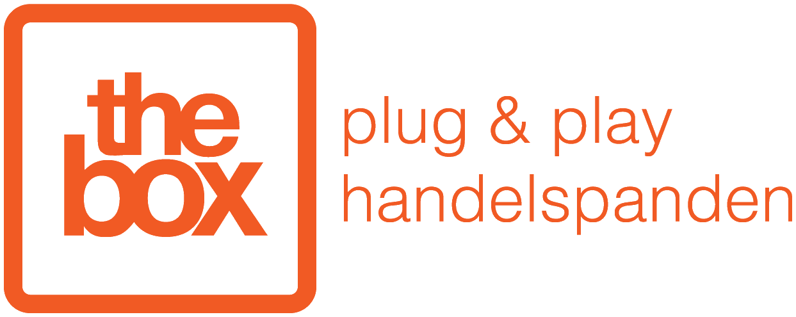

AI voor operationele vooruitgang
AI die in uw processen werkt, niet ernaast. Met software op maat, workshops en begeleiding.



Bewezen in de praktijk.
Bedrijven waarmee we processen herbouwden, geen losstaande experimenten.
Croes NV
Bouw & grondwerkenChauffeurs vulden duizenden papieren bonnen per maand in, vaak onvolledig. TriaCore bouwde een planningsplatform en chauffeursapp die alles automatisch en correct vastlegt.
Bekijk de caseA&M Group
AutomotiveMeer volume vroeg om een fundament dat mee kan groeien. Dat fundament bouwden we samen.
Bekijk de caseMedtronic
Medische technologieWe gaven het team van Medtronic een workshop over AI: wat het vandaag kan en hoe je het concreet inzet in je werk.
Bekijk onze workshopsThe Box
VastgoedWe gaven het team van The Box een workshop over AI: wat het vandaag kan en hoe je het concreet inzet in je werk.
Bekijk onze workshopsOnze oplossingen.
Custom oplossingen
Software rond uw processen, met AI waar het rendeert. Een platform, een app of een automatisering, gebouwd rond hoe uw bedrijf echt werkt.
/01Workshops
Uw team leert zelf werken met AI. Praktisch, op maat van uw sector en met voorbeelden uit het eigen werk.
/02AI-begeleiding
We zetten AI volledig voor u op: het juiste plan in ChatGPT of Claude, workflows en connectoren, MCP-tools en skills. Zo kan uw team er meteen mee aan de slag.
/03Klaar voor de volgende stap?
Vertel ons waar het vandaag wringt. We denken eerlijk mee over wat AI daar kan doen.
Plan een gesprek